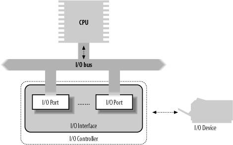
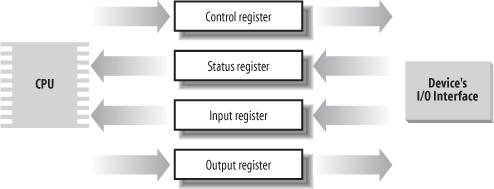

{% include JB/setup %}
{% raw %}
<div>


<a name="understandlk-CHP-13-SECT-1"></a>
<h3 class="docSection1Title">13.1. I/O Architecture</h3><a name="IDX-CHP-13-3363"></a>
<a name="IDX-CHP-13-3364"></a>
<p class="docText1">To make a computer work properly, data paths must be provided that let information flow between CPU(s), RAM, and the score of I/O devices<a name="IDX-CHP-13-3365"></a> 
 that can be connected to a personal computer. These data paths, which are denoted as the <span class="docEmphasis">buses</span><a name="IDX-CHP-13-3366"></a> 
, act as the primary communication channels inside the computer.</p>
<p class="docText1">Any computer has a <span class="docEmphasis">system bus</span> that connects most of the internal hardware devices. A typical system bus is the PCI (<span class="docEmphasis">Peripheral Component Interconnect</span>) bus. Several other types of buses, such as ISA, EISA, MCA, SCSI, and USB, are currently in use. Typically, the same computer includes several buses of different types, linked together by hardware devices called <span class="docEmphasis">bridges</span><a name="IDX-CHP-13-3367"></a> 
. Two high-speed buses are dedicated to the data transfers to and from the memory chips: the <span class="docEmphasis">frontside bus</span> connects the CPUs to the RAM controller, while the <span class="docEmphasis">backside bus</span> connects the CPUs directly to the external hardware cache. The <span class="docEmphasis">host bridge</span> links together the system bus and the frontside bus.</p>
<p class="docText1">Any I/O device is hosted by one, and only one, bus. The bus type affects the internal design of the I/O device, as well as how the device has to be handled by the kernel. In this section, we discuss the functional characteristics common to all PC architectures, without giving details about a specific bus type.</p>
<p class="docText1">The data path that connects a CPU to an I/O device is generically called an <span class="docEmphasis">I/O bus</span>. The 80 x 86 microprocessors use 16 of their address pins to address I/O devices and 8, 16, or 32 of their data pins to transfer data. The I/O bus, in<a name="IDX-CHP-13-3368"></a> 
 turn, is connected to each I/O device by means of a hierarchy of hardware components including up to three elements: I/O ports<a name="IDX-CHP-13-3369"></a> 
, interfaces, and device controllers. <a class="pcalibre5 docLink pcalibre1" href="#understandlk-CHP-13-FIG-1">Figure 13-1</a> shows the components of the I/O architecture.</p>
<a name="understandlk-CHP-13-FIG-1"></a><p class="calibre14"><center class="calibre8">
<h5 class="docFigureTitle">Figure 13-1. PC's I/O architecture</h5>
</center></p><br class="calibre7"/>
<a name="understandlk-CHP-13-SECT-1.1"></a>
<h4 class="docSection2Title">13.1.1. I/O Ports</h4><a name="IDX-CHP-13-3370"></a>
<a name="IDX-CHP-13-3371"></a>
<a name="IDX-CHP-13-3372"></a>
<a name="IDX-CHP-13-3373"></a>
<a name="IDX-CHP-13-3374"></a>
<a name="IDX-CHP-13-3375"></a>
<p class="docText1">Each device connected to the I/O bus has its own set of I/O addresses, which are usually called <span class="docEmphasis">I/O ports</span>. In the IBM PC architecture, the <span class="docEmphasis">I/O address space</span> provides up to 65,536 8-bit I/O ports. Two consecutive 8-bit ports may be regarded as a single 16-bit port, which must start on an even address. Similarly, two consecutive 16-bit ports may be regarded as a single 32-bit port, which must start on an address that is a multiple of 4. Four special assembly language instructions called <tt class="calibre25">in</tt>, <tt class="calibre25">ins</tt><a name="IDX-CHP-13-3376"></a> 
, <tt class="calibre25">out</tt><a name="IDX-CHP-13-3377"></a> 
, and <tt class="calibre25">outs</tt><a name="IDX-CHP-13-3378"></a> 
 allow the CPU to read from and write into an I/O port. While executing one of these instructions, the CPU selects the required I/O port and transfers the data between a CPU register and the port.</p>
<p class="docText1">I/O ports may also be mapped into addresses of the physical address space. The processor is then able to communicate with an I/O device by issuing assembly language instructions that operate directly on memory (for instance, <tt class="calibre25">mov</tt>, <tt class="calibre25">and</tt>, <tt class="calibre25">or</tt>, and so on). Modern hardware devices are more suited to mapped I/O, because it is faster and can be combined with DMA.</p>
<p class="docText1">An important objective for system designers is to offer a unified approach to I/O programming without sacrificing performance. Toward that end, the I/O ports of each device are structured into a set of specialized registers, as shown in <a class="pcalibre5 docLink pcalibre1" href="#understandlk-CHP-13-FIG-2">Figure 13-2</a>. The CPU writes the commands to be sent to the device into the <span class="docEmphasis">device control register</span> and reads a value that represents the internal state of the device from the <span class="docEmphasis">device status register</span>. The CPU also fetches data from the device by reading bytes from the <span class="docEmphasis">device input register</span> and pushes data to the device by writing bytes into the <span class="docEmphasis">device output register</span>.</p>
<a name="understandlk-CHP-13-FIG-2"></a><p class="calibre14"><center class="calibre8">
<h5 class="docFigureTitle">Figure 13-2. Specialized I/O ports</h5>
</center></p><br class="calibre7"/>
<p class="docText1">To lower costs, the same I/O port is often used for different purposes. For instance, some bits describe the device state, while others specify the command to be issued to the device. Similarly, the same I/O port may be used as an input register or an output register.</p>
<a name="understandlk-CHP-13-SECT-1.1.1"></a>
<h5 class="docSection3Title">13.1.1.1. Accessing I/O ports</h5><a name="IDX-CHP-13-3379"></a>
<a name="IDX-CHP-13-3380"></a>
<a name="IDX-CHP-13-3381"></a>
<a name="IDX-CHP-13-3382"></a>
<a name="IDX-CHP-13-3383"></a>
<a name="IDX-CHP-13-3384"></a>
<a name="IDX-CHP-13-3385"></a>
<a name="IDX-CHP-13-3386"></a>
<a name="IDX-CHP-13-3387"></a>
<a name="IDX-CHP-13-3388"></a>
<a name="IDX-CHP-13-3389"></a>
<a name="IDX-CHP-13-3390"></a>
<a name="IDX-CHP-13-3391"></a>
<a name="IDX-CHP-13-3392"></a>
<a name="IDX-CHP-13-3393"></a>
<a name="IDX-CHP-13-3394"></a>
<a name="IDX-CHP-13-3395"></a>
<a name="IDX-CHP-13-3396"></a>
<a name="IDX-CHP-13-3397"></a>
<a name="IDX-CHP-13-3398"></a>
<a name="IDX-CHP-13-3399"></a>
<a name="IDX-CHP-13-3400"></a>
<a name="IDX-CHP-13-3401"></a>
<a name="IDX-CHP-13-3402"></a>
<p class="docText1">The <tt class="calibre25">in</tt>, <tt class="calibre25">out</tt>, <tt class="calibre25">ins</tt>, and <tt class="calibre25">outs</tt> assembly language instructions access I/O ports. The following auxiliary functions are included in the kernel to simplify such accesses:</p>
<dl class="docText1"><dt class="calibre7"><br class="calibre7"/><p class="calibre14"><span class="docPubcolor"><span class="docPubcolor"><span class="docMonofont">inb( )</span></span>, <span class="docPubcolor"><span class="docMonofont">inw( )</span></span>, <span class="docPubcolor"><span class="docMonofont">inl( )</span></span></span></p></dt>
<dd class="calibre20"><p class="docList">Read 1, 2, or 4 consecutive bytes, respectively, from an I/O port. The suffix "b," "w," or "l" refers, respectively, to a byte (8 bits), a word (16 bits), and a long (32 bits).</p></dd><dt class="calibre7"><br class="calibre7"/><p class="calibre14"><span class="docPubcolor"><span class="docPubcolor"><span class="docMonofont">inb_p( )</span></span>, <span class="docPubcolor"><span class="docMonofont">inw_p( )</span></span>, <span class="docPubcolor"><span class="docMonofont">inl_p( )</span></span></span></p></dt>
<dd class="calibre20"><p class="docList">Read 1, 2, or 4 consecutive bytes, respectively, from an I/O port, and then execute a "dummy" instruction to introduce a pause.</p></dd><dt class="calibre7"><br class="calibre7"/><p class="calibre14"><span class="docPubcolor"><span class="docPubcolor"><span class="docMonofont">outb( )</span></span>, <span class="docPubcolor"><span class="docMonofont">outw( )</span></span>, <span class="docPubcolor"><span class="docMonofont">outl( )</span></span></span></p></dt>
<dd class="calibre20"><p class="docList">Write 1, 2, or 4 consecutive bytes, respectively, to an I/O port.</p></dd><dt class="calibre7"><br class="calibre7"/><p class="calibre14"><span class="docPubcolor"><span class="docPubcolor"><span class="docMonofont">outb_p( )</span></span>, <span class="docPubcolor"><span class="docMonofont">outw_p( )</span></span>, <span class="docPubcolor"><span class="docMonofont">outl_p( )</span></span></span></p></dt>
<dd class="calibre20"><p class="docList">Write 1, 2, and 4 consecutive bytes, respectively, to an I/O port, and then execute a "dummy" instruction to introduce a pause.</p></dd><dt class="calibre7"><br class="calibre7"/><p class="calibre14"><span class="docPubcolor"><span class="docPubcolor"><span class="docMonofont">insb( )</span></span>, <span class="docPubcolor"><span class="docMonofont">insw( )</span></span>, <span class="docPubcolor"><span class="docMonofont">insl( )</span></span></span></p></dt>
<dd class="calibre20"><p class="docList">Read sequences of consecutive bytes in groups of 1, 2, or 4, respectively, from an I/O port. The length of the sequence is specified as a parameter of the functions.</p></dd><dt class="calibre7"><br class="calibre7"/><p class="calibre14"><span class="docPubcolor"><span class="docPubcolor"><span class="docMonofont">outsb( )</span></span>, <span class="docPubcolor"><span class="docMonofont">outsw( )</span></span>, <span class="docPubcolor"><span class="docMonofont">outsl( )</span></span></span></p></dt>
<dd class="calibre20"><p class="docList">Write sequences of consecutive bytes, in groups of 1, 2, or 4, respectively, to an I/O port.</p></dd></dl>
<p class="docText1">While accessing I/O ports is simple, detecting which I/O ports have been assigned to I/O devices may not be easy, in particular, for systems based on an ISA bus. Often a device driver must blindly write into some I/O port to probe the hardware device; if, however, this I/O port is already used by some other hardware device, a system crash could occur. To prevent such situations, the kernel keeps track of I/O ports assigned to each hardware device by means of "resources<a name="IDX-CHP-13-3403"></a> 
."</p>
<p class="docText1">A <span class="docEmphasis">resource</span> represents a portion of some entity that can be exclusively assigned to a device driver. In our case, a resource represents a range of I/O port addresses. The information relative to each resource is stored in a <tt class="calibre25">resource</tt> data structure, whose fields are shown in <a class="pcalibre5 docLink pcalibre1" href="#understandlk-CHP-13-TABLE-1">Table 13-1</a>. All resources of the same kind are inserted in a tree-like data structure; for instance, all resources representing I/O port address ranges are included in a tree rooted at the node <tt class="calibre25">ioport_resource</tt>.</p>
<a name="understandlk-CHP-13-TABLE-1"></a><p class="calibre14"><table cellspacing="0" frame="hsides" rules="all" cellpadding="4" width="100%" class="calibre15"><caption class="calibre33"><h5 class="docFigureTitle">Table 13-1. The fields of the resource data structure</h5></caption><colgroup class="calibre16"><col class="calibre17"/><col class="calibre17"/><col class="calibre17"/></colgroup><thead class="calibre18"><tr class="calibre34"><th class="thead" scope="col"><p class="docText1"><span class="calibre5">Type</span></p></th><th class="thead" scope="col"><p class="docText1"><span class="calibre5">Field</span></p></th><th class="thead" scope="col"><p class="docText1"><span class="calibre5">Description</span></p></th></tr></thead><tr class="calibre2"><td class="docTableCell"><p class="docText2"><tt class="calibre25">const char *</tt></p></td><td class="docTableCell"><p class="docText2"><tt class="calibre25">name</tt></p></td><td class="docTableCell"><p class="docText2">Description of owner of the resource</p></td></tr><tr class="calibre2"><td class="docTableCell"><p class="docText2"><tt class="calibre25">unsigned long</tt></p></td><td class="docTableCell"><p class="docText2"><tt class="calibre25">start</tt></p></td><td class="docTableCell"><p class="docText2">Start of the resource range</p></td></tr><tr class="calibre2"><td class="docTableCell"><p class="docText2"><tt class="calibre25">unsigned long</tt></p></td><td class="docTableCell"><p class="docText2"><tt class="calibre25">end</tt></p></td><td class="docTableCell"><p class="docText2">End of the resource range</p></td></tr><tr class="calibre2"><td class="docTableCell"><p class="docText2"><tt class="calibre25">unsigned long</tt></p></td><td class="docTableCell"><p class="docText2"><tt class="calibre25">flags</tt></p></td><td class="docTableCell"><p class="docText2">Various flags</p></td></tr><tr class="calibre2"><td class="docTableCell"><p class="docText2"><tt class="calibre25">struct resource *</tt></p></td><td class="docTableCell"><p class="docText2"><tt class="calibre25">parent</tt></p></td><td class="docTableCell"><p class="docText2">Pointer to parent in the resource tree</p></td></tr><tr class="calibre2"><td class="docTableCell"><p class="docText2"><tt class="calibre25">struct resource *</tt></p></td><td class="docTableCell"><p class="docText2"><tt class="calibre25">sibling</tt></p></td><td class="docTableCell"><p class="docText2">Pointer to a sibling in the resource tree</p></td></tr><tr class="calibre2"><td class="docTableCell"><p class="docText2"><tt class="calibre25">struct resource *</tt></p></td><td class="docTableCell"><p class="docText2"><tt class="calibre25">child</tt></p></td><td class="docTableCell"><p class="docText2">Pointer to first child in the resource tree</p></td></tr></table></p><br class="calibre7"/>
<p class="docText1">The children of a node are collected in a list whose first element is pointed to by the <tt class="calibre25">child</tt> field. The <tt class="calibre25">sibling</tt> field points to the next node in the list.</p>
<p class="docText1">Why use a tree? Well, consider, for instance, the I/O port addresses used by an IDE hard disk interfacelet's say from <tt class="calibre25">0xf000</tt> to <tt class="calibre25">0xf00f</tt>. A resource with the <tt class="calibre25">start</tt> field set to <tt class="calibre25">0xf000</tt> and the <tt class="calibre25">end</tt> field set to <tt class="calibre25">0xf00f</tt> is then included in the tree, and the conventional name of the controller is stored in the <tt class="calibre25">name</tt> field. However, the IDE device driver needs to remember another bit of information, namely that the subrange from <tt class="calibre25">0xf000</tt> to <tt class="calibre25">0xf007</tt> is used for the master disk of the IDE chain, while the subrange from <tt class="calibre25">0xf008</tt> to <tt class="calibre25">0xf00f</tt> is used for the slave disk. To do this, the device driver inserts two children below the resource corresponding to the whole range from <tt class="calibre25">0xf000</tt> to <tt class="calibre25">0xf00f</tt>, one child for each subrange of I/O ports. As a general rule, each node of the tree must correspond to a subrange of the range associated with the parent. The root of the I/O port resource tree (<tt class="calibre25">ioport_resource</tt>) spans the whole I/O address space (from port number 0 to 65535).</p>
<p class="docText1">Each device driver may use the following three functions, passing to them the root node of the resource tree and the address of a resource data structure of interest:</p>
<dl class="docText1"><dt class="calibre7"><br class="calibre7"/><p class="calibre14"><span class="docPubcolor"><span class="docPubcolor"><span class="docMonofont">request_resource( )</span></span></span></p></dt>
<dd class="calibre20"><p class="docList">Assigns a given range to an I/O device.</p></dd><dt class="calibre7"><br class="calibre7"/><p class="calibre14"><span class="docPubcolor"><span class="docPubcolor"><span class="docMonofont">allocate_resource( )</span></span></span></p></dt>
<dd class="calibre20"><p class="docList">Finds an available range having a given size and alignment in the resource tree; if it exists, assigns the range to an I/O device (mainly used by drivers of PCI devices, which can be configured to use arbitrary port numbers and on-board memory addresses).</p></dd><dt class="calibre7"><br class="calibre7"/><p class="calibre14"><span class="docPubcolor"><span class="docPubcolor"><span class="docMonofont">release_resource( )</span></span></span></p></dt>
<dd class="calibre20"><p class="docList">Releases a given range previously assigned to an I/O device.</p></dd></dl>
<p class="docText1">The kernel also defines some shortcuts to the above functions that apply to I/O ports: <tt class="calibre25">request_region( )</tt> assigns a given interval of I/O ports and <tt class="calibre25">release_region( )</tt> releases a previously assigned interval of I/O ports. The tree of all I/O addresses currently assigned to I/O devices can be obtained from the <i class="docEmphasis">/proc/ioports</i> file.</p>
<a name="understandlk-CHP-13-SECT-1.2"></a>
<h4 class="docSection2Title">13.1.2. I/O Interfaces</h4><a name="IDX-CHP-13-3404"></a>
<a name="IDX-CHP-13-3405"></a>
<a name="IDX-CHP-13-3406"></a>
<a name="IDX-CHP-13-3407"></a>
<a name="IDX-CHP-13-3408"></a>
<a name="IDX-CHP-13-3409"></a>
<p class="docText1">An <span class="docEmphasis">I/O interface</span> is a hardware circuit inserted between a group of I/O ports and the corresponding device controller. It acts as an interpreter that translates the values in the I/O ports into commands and data for the device. In the opposite direction, it detects changes in the device state and correspondingly updates the I/O port that plays the role of status register. This circuit can also be connected through an IRQ line to a Programmable Interrupt Controller, so that it issues interrupt requests on behalf of the device.</p>
<p class="docText1">There are two types of interfaces:</p>
<a name="IDX-CHP-13-3410"></a><dl class="docText1"><dt class="calibre7"><br class="calibre7"/><p class="calibre14"><span class="docPubcolor"><span class="docEmphasis">Custom I/O interfaces</span></span></p></dt><a name="IDX-CHP-13-3410"></a>
<dd class="calibre20"><p class="docList">Devoted to one specific hardware device. In some cases, the device controller is located in the same <span class="docEmphasis">card</span><sup class="docFootnote"><a class="pcalibre5 docLink pcalibre1" href="#understandlk-CHP-13-FN1">[*]</a></sup> that contains the I/O interface. The devices attached to a custom I/O interface can be either <span class="docEmphasis">internal devices</span> (devices located inside the PC's cabinet) or <span class="docEmphasis">external devices</span> (devices located outside the PC's cabinet).</p><blockquote class="calibre22"><p class="docFootnote2"><sup class="calibre24"><a name="understandlk-CHP-13-FN1">[*]</a></sup> Each card must be inserted in one of the available free bus slots of the PC. If the card can be connected to an external device through an external cable, the card sports a suitable connector in the rear panel of the PC.</p></blockquote></dd><dt class="calibre7"><br class="calibre7"/><p class="calibre14"><span class="docPubcolor"><span class="docEmphasis">General-purpose I/O interfaces</span></span></p></dt>
<dd class="calibre20"><p class="docList">Used to connect several different hardware devices. Devices attached to a general-purpose I/O interface are usually external devices.</p></dd></dl>
<a name="understandlk-CHP-13-SECT-1.2.1"></a>
<h5 class="docSection3Title">13.1.2.1. Custom I/O interfaces</h5><a name="IDX-CHP-13-3411"></a>
<a name="IDX-CHP-13-3412"></a>
<a name="IDX-CHP-13-3413"></a>
<a name="IDX-CHP-13-3414"></a>
<a name="IDX-CHP-13-3415"></a>
<a name="IDX-CHP-13-3416"></a>
<a name="IDX-CHP-13-3417"></a>
<a name="IDX-CHP-13-3418"></a>
<p class="docText1">Just to give an idea of how much variety is encompassed by custom I/O interfacesthus by the devices currently installed in a PCwe'll list some of the most commonly found:</p>
<dl class="docText1"><dt class="calibre7"><br class="calibre7"/><p class="calibre14"><span class="docPubcolor"><span class="docEmphasis">Keyboard interface</span></span></p></dt>
<dd class="calibre20"><p class="docList">Connected to a keyboard controller that includes a dedicated microprocessor. This microprocessor decodes the combination of pressed keys, generates an interrupt, and puts the corresponding scan code in an input register.</p></dd><dt class="calibre7"><br class="calibre7"/><p class="calibre14"><span class="docPubcolor"><span class="docEmphasis">Graphic interface</span></span></p></dt>
<dd class="calibre20"><p class="docList">Packed together with the corresponding controller in a graphic card that has its own <span class="docEmphasis">frame buffer</span>, as well as a specialized processor and some code stored in a Read-Only Memory chip (ROM). The frame buffer is an on-board memory containing a description of the current screen contents.</p></dd><dt class="calibre7"><br class="calibre7"/><p class="calibre14"><span class="docPubcolor"><span class="docEmphasis">Disk interface</span></span></p></dt>
<dd class="calibre20"><p class="docList">Connected by a cable to the disk controller, which is usually integrated with the disk. For instance, the IDE interface is connected by a 40-wire flat conductor cable to an intelligent disk controller that can be found on the disk itself.</p></dd><dt class="calibre7"><br class="calibre7"/><p class="calibre14"><span class="docPubcolor"><span class="docEmphasis">Bus mouse interface</span></span></p></dt>
<dd class="calibre20"><p class="docList">Connected by a cable to the corresponding controller, which is included in the mouse.</p></dd><dt class="calibre7"><br class="calibre7"/><p class="calibre14"><span class="docPubcolor"><span class="docEmphasis">Network interface</span></span></p></dt>
<dd class="calibre20"><p class="docList">Packed together with the corresponding controller in a network card used to receive or transmit network packets. Although there are several widely adopted network standards, Ethernet (IEEE 802.3) is the most common.</p></dd></dl>
<a name="understandlk-CHP-13-SECT-1.2.2"></a>
<h5 class="docSection3Title">13.1.2.2. General-purpose I/O interfaces</h5>
<p class="docText1">Modern PCs include several general-purpose I/O interfaces<a name="IDX-CHP-13-3419"></a> 
, which connect a wide range of external devices. The most common interfaces are:</p>
<a name="IDX-CHP-13-3420"></a><a name="IDX-CHP-13-3421"></a><dl class="docText1"><dt class="calibre7"><br class="calibre7"/><p class="calibre14"><span class="docPubcolor"><span class="docEmphasis">Parallel port</span></span></p></dt>
<dd class="calibre20"><p class="docList">Traditionally used to connect printers, it can also be used to connect removable disks, scanners, backup units, and other computers. The data is transferred 1 byte (8 bits) at a time.</p></dd><dt class="calibre7"><br class="calibre7"/><p class="calibre14"><span class="docPubcolor"><span class="docEmphasis">Serial port</span></span></p></dt>
<dd class="calibre20"><p class="docList">Like the parallel port, but the data is transferred 1 bit at a time. It includes a Universal Asynchronous Receiver and Transmitter (UART) chip to string out the bytes to be sent into a sequence of bits and to reassemble the received bits into bytes. Because it is intrinsically slower than the parallel port, this interface is mainly used to connect external devices that do not operate at a high speed, such as modems, mouses, and printers.</p></dd><dt class="calibre7"><br class="calibre7"/><p class="calibre14"><span class="docPubcolor"><span class="docEmphasis">PCMCIA interface</span></span></p></dt>
<dd class="calibre20"><p class="docList">Included mostly on portable computers. The external device, which has the shape of a credit card, can be inserted into and removed from a slot without rebooting the system. The most common PCMCIA devices are hard disks, modems, network cards, and RAM expansions.</p></dd><dt class="calibre7"><br class="calibre7"/><p class="calibre14"><span class="docPubcolor"><span class="docEmphasis">SCSI (Small Computer System Interface) interface</span></span></p></dt><a name="IDX-CHP-13-3420"></a>
<dd class="calibre20"><p class="docList">A circuit that connects the main PC bus to a secondary bus called the <span class="docEmphasis">SCSI bus</span>. The SCSI-2 bus allows up to eight PCs and external deviceshard disks, scanners, CD-ROM writers, and so onto be connected. Wide SCSI-2 and the SCSI-3 interfaces allow you to connect 16 devices or more if additional interfaces are present. The <span class="docEmphasis">SCSI standard</span> is the communication protocol used to connect devices via the SCSI bus.</p></dd><dt class="calibre7"><br class="calibre7"/><p class="calibre14"><span class="docPubcolor"><span class="docEmphasis">Universal serial bus (USB)</span></span></p></dt><a name="IDX-CHP-13-3421"></a>
<dd class="calibre20"><p class="docList">A general-purpose I/O interface that operates at a high speed and may be used for the external devices traditionally connected to the parallel port, the serial port, and the SCSI interface.</p></dd></dl>
<a name="understandlk-CHP-13-SECT-1.3"></a>
<h4 class="docSection2Title">13.1.3. Device Controllers</h4><a name="IDX-CHP-13-3422"></a>
<a name="IDX-CHP-13-3423"></a>
<p class="docText1">A complex device may require a <span class="docEmphasis">device controller</span> to drive it. Essentially, the controller plays two important roles:</p>
<ul class="calibre11"><li class="calibre12"><p class="docText1">It interprets the high-level commands received from the I/O interface and forces the device to execute specific actions by sending proper sequences of electrical signals to it.</p></li><li class="calibre12"><p class="docText1">It converts and properly interprets the electrical signals received from the device and modifies (through the I/O interface) the value of the status register.</p></li></ul>
<p class="docText1">A typical device controller is the <span class="docEmphasis">disk controller</span>, which receives high-level commands such as a "write this block of data" from the microprocessor (through the I/O interface) and converts them into low-level disk operations such as "position the disk head on the right track" and "write the data inside the track." Modern disk controllers<a name="IDX-CHP-13-3424"></a> 
 are very sophisticated, because they can keep the disk data in on-board fast disk caches<a name="IDX-CHP-13-3425"></a> 
 and can reorder the CPU high-level requests optimized for the actual disk geometry.</p>
<p class="docText1">Simpler devices do not have a device controller; examples include the Programmable Interrupt Controller (see the section "<a class="pcalibre5 docLink pcalibre1" href="understandlk-CHP-4-SECT-2.html#understandlk-CHP-4-SECT-2">Interrupts and Exceptions</a>" in <a class="pcalibre5 docLink pcalibre1" href="understandlk-CHP-4.html#understandlk-CHP-4">Chapter 4</a>) and the Programmable Interval Timer (see the section "<a class="pcalibre5 docLink pcalibre1" href="understandlk-CHP-6-SECT-1.html#understandlk-CHP-6-SECT-1.3">Programmable Interval Timer (PIT)</a>" in <a class="pcalibre5 docLink pcalibre1" href="understandlk-CHP-6.html#understandlk-CHP-6">Chapter 6</a>).</p>
<p class="docText1">Several hardware devices include their own memory, which is often called <span class="docEmphasis">I/O shared memory</span><a name="IDX-CHP-13-3426"></a> 
. For instance, all recent graphic cards include tens of megabytes of RAM in the frame buffer, which is used to store the screen image to be displayed on the monitor. We will discuss I/O shared memory in the section "<a class="pcalibre5 docLink pcalibre1" href="understandlk-CHP-13-SECT-4.html#understandlk-CHP-13-SECT-4.4">Accessing the I/O Shared Memory</a>" later in this chapter.</p>

<br class="calibre7"/>

</div>

{% endraw %}

